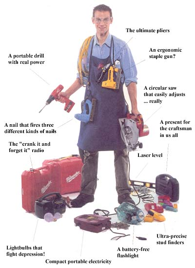
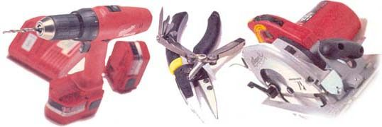
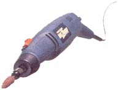
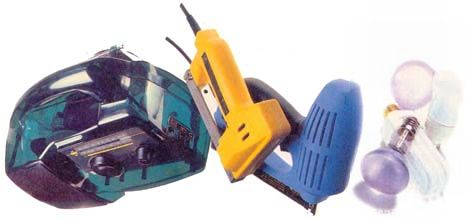
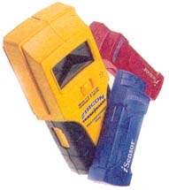

We pick the best from
the National Hardware
Show.
So my hotel wasn't the best Chicago had to offer. So what. The way I see it, room service and cable TV are for tourists, and touring (I can assure you) was not on this reporter's list of things to do while in town for the 54th annual National Hardware Show. Besides, tools and tough guys have been a part of the Windy City for decades, what with the cattle industry and the steelworkers. Hell, even Al Capone worked this town... back when the only tools a guy needed to get the job done were a square jaw and a Tommy gun. In Chicago, it doesn't take long to realize that a good deal on a well-made hammer is better than complimentary shampoo any day.
Make no mistake, the National Hardware Show is no normal hammer-and-nail nexus; it is nothing short of the crossroads of Tool-dom, where 3,000 exhibitors from over 90 countries converge on a 1.3 million-square-foot indoor universe called McCormick Place Convention Center. Once inside, the intrepid explorer finds himself in a do-it-yourself fantasy world with enough gear to make Tim Allen go weak in the knees.
My goal on this indoor tool planet was to find out what was new and, well, cool in a very healthy, very competitive tool industry. So after securing my press credentials and rolling up my sleeves. I figured Stanley Tools would be a good place to start. The company's quaintly described "booth," some 30 minutes, by foot, from the press office, was actually a two-story house in the center of the exhibit hall. It seemed an oddly appropriate display for one of the tool world's juggernauts.
Milwaukee Tools' Power Plus 14.4-inch cordless drill features a reversible, rechargeable battery in case you need to get into those hard to reach spots.
Stanley's MaxGrip pliers reflect the trend toward more ergonomic grips. Also above is Imperial Schrade's Tough Chip, an all-in-one pocket tool.
Milwaukee Tools' new 7 1/2-inch circular saw features the Tilt-lok handle, adjustable to eight positions. Makes safe sawing a snap.
Right away, what caught my eye were not the fancy IntelliTools or laser guided carpenter's squares (I'll get to those later), but the comprehensive improvements on usability, safety and efficiency that Stanley has designed into its new tools. It signaled an industry wide trend toward more ergonomically- friendly gear.
Ergonomics refers to a principle of design (of tools, furniture etc.) that emphasizes human efficiency, comfort and safety. Companies everywhere have been developing this new approach to tools over the past three years in order to help reduce the amount of physical stress endured by workers who use the same tools over and over. Improved materials like softer plastics and rubbers have given handheld tools more comfortable grips, while innovations in multiuse tools have cut down on the number of times workers have to return to the toolshed. Combine this with safer power tools, clearer digital displays and longer lasting batteries and the industry hasn't so much invented new tools as it has improved upon old reliables. An ergonomists like to say, the industry vision has shifted from expecting workers to fit the tool to offering tools to fit the worker.
For Stanley, the move to a more comfortable tool builds on a long history of producing reliable gear. Its new multi-bit ratcheting and non-ratcheting screwdrivers use"tri-lobular and bi-material textured" handles (sounds fancy enough to be good) with a built-in six-bit cache, so you don't have to bend over into the toolbox every time you use a different-size screw (Multi-bit screwdrivers have been around for a number of years and Stanley's brand is certainly not the be-all, end-all. Best Way Tools out of Deer Park, New York, puts out a very solid 12-bit screwdriver that's sure to meet every possible screw driving need.) In addition to its ergonomically designed multi-bits, Stanley also has a notable new line of self-adjusting pliers called MaxGrips, as well as perhaps the first overhaul of the tape measure since the 100-footer hit the shelves: the Fat Max. This 25-foot rule features a 1 1/4-inch-wide tape that has an 11-foot standout.
The other tool company - Black & Decker - wasn't too far from its major competition and I just couldn't resist taking a turn on one of its new cordless drills. For what Stanley is to the handheld, Black & Decker is to the power tool.
Black & Decker'sWizard Rotary Tool is thechoice for the tool guy who has it all. It strips, grinds, sands and cuts like magic.
The coolest cordless was Black & Decker's brand new Pivot Driver. This 3.6-volt screwdriver locks in two positions - "in-line" and "pistol grip," in cool new tool vernacular - to get into those tiny corners or cupboards that give so many carpenters high blood pressure. The Pivot Driver is powered by Black & Decker's VersaPak, an interchangeable battery that you can use with other cordless drills, screwdrivers and circular saws.
Then I stumbled upon the Wizard Rotary Tool, one of those tools that you can always figure out a use for after you get it home to the garage This cordless or corded gadget is used for detailed wood .sanding, steel buffing, nail cutting and furniture stripping, and it even comes with what Black & Decker calls a "Flexible Shaft" that fits on the end of the bit to reach tough areas. The Wizard can handle up to 24,000 rpm and comes in a kit that includes 63 accessories (it accepts over a hundred), along with VersaPak batteries and a bat tery recharger. Its truly magical.
Other notable new power tools were Milwaukee Tools' cordless circular saws, with ergonomically sound Tilt-Lok adjustable handles. With eight locking positions, the handle allows workers to make any kind of cut without compromising a safe body posture. The Models 6390-20 and 6390-20 7 1/4-inch saws use an interchangeable and reversible battery that you can also use on the company's Model 0516-22 cordless drill. Now if Milwaukee would just get someone to come up with a few catchy names ....
Trudging on through endless aisles of barkers and eager salesmen I realized that inside Tool-dom there is an undeniable hierarchy. Among the exhibitors, the pecking order is not unlike a medieval fiefdom with the big wigs like Stanley and Black & Decker towering in the center of the hall, while smaller companies surround them like towns people gathering around the walls of a castle
Out on the fringe I found Arrow, makers of the Arrow Nail Master, an electric nail gun that shoots 18- gauge brad nails in three different lengths: 5/8" 3/4" and 1". The Saddle Brook, New Jersey - based company also makes a nifty staple gun that can vary the depth to which the regular or rounded staples will penetrate.
The Freeplay radio doesn't take batteries and it doesn't plug in; you get music from the sun. If ifs cloudy, a crank on the side supplies the juice.
Arrow, a company out of Saddle Brook, New Jersey, specializes in staple guns. Its new Nail Master even shoots three sizes of brad nails.
Phillips' Earthlight 60-watt lightbulb lasts for five years, while the purple Verilux bulbs can help ease the doldrums of winters cold, dark days.
A few booths over, Imperial Schrade was promoting their Leatherman - look - alike -only - its - smaller -and - locks Tough Chip, a ten-function tool that's handy for the pocket. Next to Imperial, I found Freeplay, a company promoting a battery- and electricity-free self-powered radio. The water-resistant portable uses solar power on sunny days or a crank that you wind up for 30 seconds when the sun goes away. It's cool. I even discovered a pump company promoting meditative backyard ponds and fountains: The Little Giant Pump Company sells everything you need to sit by the proverbial eternal stream.
As for power supplies. I was very im pressed with Century Portable. The Minneapolis-based company specializes in welding gear but also makes the new Electric Pac, a cordless and rechargeable power pack that can run a 4-watt DC lightbulb for up to 40 hours or a 60-watt AC television for seven and a half hours whichever comes first. And if you're looking for the perfect bulb to light with your new portable pack, check out Phillips Earthlight 60-watt job, an environmentally friendly bulb that the company claims you won't have to change for five years. Either that or try Verilux Healthy Lighting for a range of colored lightbulbs to "battle Seasonal Affective Disorder in the office." Talk about ergonomics.
Now, aside from hiring the work out, there is perhaps nothing better you can do for your lower back than finding a tool that'll do the task for you. From laser-guided levels to liquid crystal tape measures, the new century of "smart" tools might actually take the job right out of a few jobs.
Zircon Corporation's electronic stud finders-Stud Vision and iSensor - are part of the new century of smart tools.
The space-age-named Zircon Corporation makes two electronic stud finders, the i Sensor and the StudVision, as well as a MultiScanner capable of detecting metal in wood, rebar in concrete and live poser lines in a wall. Also, you can always count on Stanley to have a hand in anything new. Their line of IntelliTools includes the IntelliTape, a tape measure with a digital readout, and the Digital Stud Sensor with X-ray vision (sans kung fu grip), which detects studs in walls as well as live wires and pipes through three inches of concrete.
If it's a "laser" you're looking for, check out Megapower's new Laser Level, a lightweight tool that fits in your pocket and marks points across the room. For larger jobs, see about Megapower's Rotating Laser, a battery-run tool that can be used with a surveyor's rod by projecting beams up to 325 feet. These tools may not be able to hold a ladder or put up mini-blinds, but they might just come in handy for a do-it-yourselfer without a hand to spare.
By 6 P.M. that evening, as the sun was setting on Tool Land. I had collected enough press releases and business cards to heat the whole of Cleveland through the coldest winter months. My knees were starting to give and my lower back felt like it did when I was a young construction worker doing the decidedly unergonomic job of lifting bricks.
Yet I was glad to have attended the NHS in its 54th year. I got to see a group of lost Amish men marveling at the McCormick Place fountains. I found some tools I could use and some that were useless. But most importantly I discovered that there are a few moments in this short life more horrifying than a press conference on circular saws. Gentlemen, charge your batteries. The tool world is alive and well.
|
 |
 |
 |
|
 |
 |
|